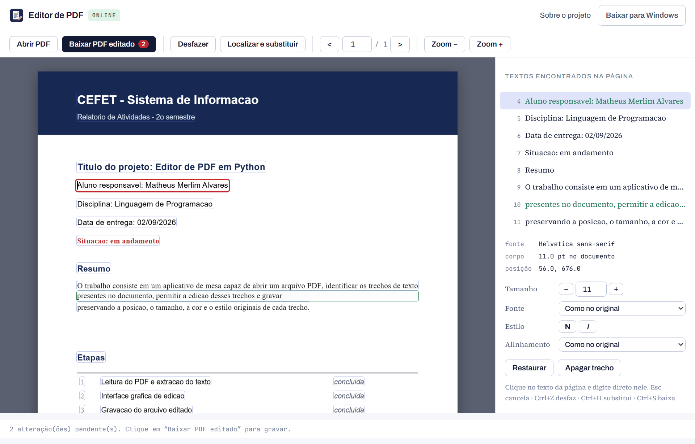

Editor de PDF
Editor de PDFTrabalho de Sistema de Informação · CEFET
Editor de PDF
Abre um arquivo PDF, identifica o texto que existe dentro dele, permite reescrever esse texto e salva tudo de volta em PDF — preservando posição, tamanho, cor e estilo de cada trecho. Funciona direto no navegador, sem instalar nada, ou como programa de mesa para Windows.
online: nada para instalar o arquivo não sai do seu computador versão de mesa: Windows · 53 MB licença MIT

Duas versões, o mesmo editor
O mesmo processo de edição em dois formatos. A escolha depende de uma coisa só: se o texto antigo precisa apenas sumir de vista ou ser realmente retirado do arquivo.
No navegador
Abre, edita e baixa o PDF corrigido sem instalar nada. O arquivo é lido e gravado pelo próprio navegador — nada é enviado para servidor nenhum.
Programa de mesa
Um único EditorPDF.exe, portátil e sem instalação. Apaga o texto
antigo de verdade, usando a redação do próprio PDF, em vez de cobri-lo.
| No navegador | Programa de mesa | |
|---|---|---|
| Instalação | nenhuma | baixar 53 MB |
| Onde roda | qualquer sistema com navegador | Windows |
| Texto antigo | coberto com a cor do fundo | removido do arquivo |
| Cor e fundo | lidos dos pixels da página | lidos da estrutura do PDF |
| Privacidade | tudo no seu navegador | tudo na sua máquina |
O que ele faz
Identifica o texto
Percorre cada página e extrai todos os trechos de texto com a sua caixa, fonte, corpo e cor.
Edita na própria página
Clique sobre a palavra na página renderizada — ou escolha na lista lateral — e digite o texto novo.
Localiza e substitui
Troca uma palavra ou frase em uma página ou no documento inteiro de uma só vez.
Apaga trechos
Tira um texto da página: retirado do arquivo na versão de mesa, coberto no navegador.
Desfaz até 25 vezes
Cada alteração guarda o estado anterior do documento inteiro; Ctrl+Z volta atrás.
Salva em PDF
O resultado é um PDF comum, que abre em qualquer leitor — inclusive por cima do arquivo original.
Como funciona
Um PDF não guarda parágrafos editáveis: ele guarda instruções de desenho que colocam grupos de caracteres em coordenadas da página. Editar, então, é um processo de três passos — e nessa ordem, porque o texto novo só pode ser escrito depois que o antigo sai. As duas versões seguem o mesmo caminho; muda apenas a biblioteca que faz o trabalho (PyMuPDF no programa de mesa, pdf.js e pdf-lib no navegador).
-
1
Leitura
O documento é lido trecho a trecho (span). Cada trecho traz o texto, a caixa que ele ocupa, a linha-base onde começa, a fonte, o corpo em pontos e a cor.
# para cada span da página dados = pagina.get_text("dict")
-
2
Substituição
A área do trecho antigo é marcada e apagada por uma redação — que remove só os caracteres, deixando imagens e desenhos vetoriais intactos. Em seguida o texto novo é escrito exatamente sobre a mesma linha-base, com o corpo e a cor originais. No navegador não existe redação: lá o trecho é coberto por um retângulo pintado com a cor de fundo lida dos pixels da própria página.
pagina.add_redact_annot(caixa) pagina.apply_redactions(images=NONE, graphics=NONE) pagina.insert_text(origem, texto_novo, fontname, fontsize, color)
-
3
Gravação
O documento é gravado novamente, com limpeza dos objetos que ficaram sem uso e compressão dos fluxos.
doc.save(destino, garbage=4, deflate=True)
Trecho selecionado
- texto
- "Responsável: Matheus Merlim"
- bbox
- 56.0, 128.3 → 261.4, 142.7
- origem
- 56.0, 140.0 (linha-base)
- fonte
- Helvetica
- corpo
- 12.0 pt
- cor
- #000000
- regravação
- helv
Sobre as fontes
O tamanho da letra é sempre preservado: o corpo em pontos do trecho original é o mesmo usado no texto novo. Se o texto novo for mais comprido, ele avança para a direita, e o editor avisa quando passa da margem — nunca encolhe a fonte para caber. A fonte, essa sim, muda: como ela nem sempre vem embutida no arquivo, o texto novo é reescrito com a base-14 equivalente — as três famílias que todo leitor de PDF é obrigado a ter — mantendo o estilo (serifa, monoespaçada, negrito, itálico).
fontes sem serifa
fontes com serifa
fontes monoespaçadas
Instalação
Online, sem instalar
Abra o editor no navegador e escolha o arquivo. Funciona em qualquer sistema operacional e o PDF nunca sai do seu computador.
Executável pronto
Baixe o EditorPDF.exe na página de releases e execute com dois
cliques. É portátil: não instala nada e não exige Python na máquina. Também dá para
arrastar um PDF sobre o ícone para abri-lo direto.
A partir do código-fonte
Requer Python 3.9 ou superior.
git clone https://github.com/matheusmerlim1/editor-pdf.git cd editor-pdf pip install -r requirements.txt python editor_pdf.py
Para gerar o executável você mesmo, rode build_exe.bat.
Limitações
- PDFs digitalizados são só imagem: não há texto para identificar. Seria preciso reconhecimento óptico de caracteres (OCR) — o programa avisa quando isso acontece.
- Como o texto é reescrito com as fontes base-14, uma fonte muito característica do documento não é reproduzida com exatidão: Calibri vira Helvetica, Georgia vira Times, Consolas vira Courier — no mesmo tamanho e no mesmo estilo.
- A edição é feita por trecho, e não por parágrafo: um texto bem maior que o original não reorganiza a quebra de linha sozinho. Como o tamanho da letra é preservado, o que passar da margem fica fora da área visível da página — o editor avisa quando isso acontece.
- Na versão online o texto antigo é coberto com a cor do fundo, e não apagado: ele continua dentro do arquivo e pode ser recuperado por quem souber procurar. Para retirá-lo de verdade, use a versão de mesa, que aplica a redação do próprio PDF.
- Alfabetos fora do conjunto latino-1 (grego, cirílico) não são cobertos pelas fontes base-14. Travessões e aspas curvas são convertidos automaticamente.